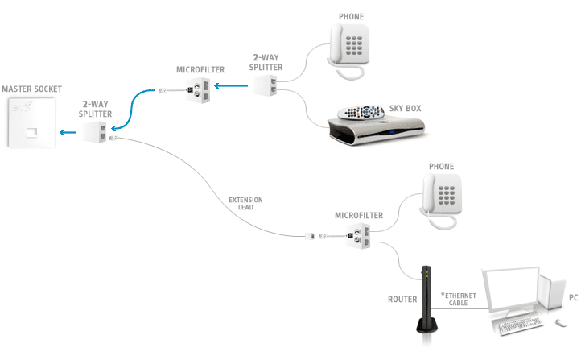
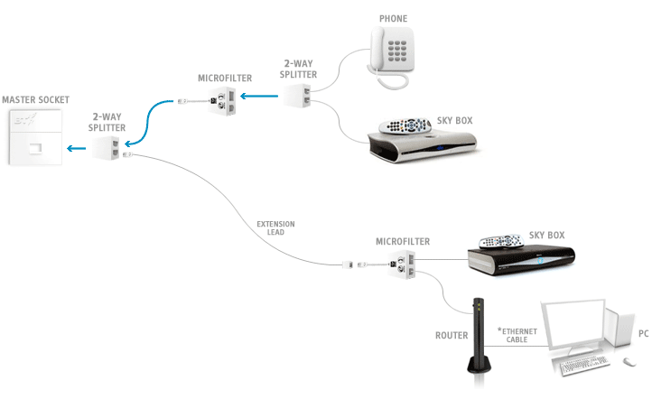
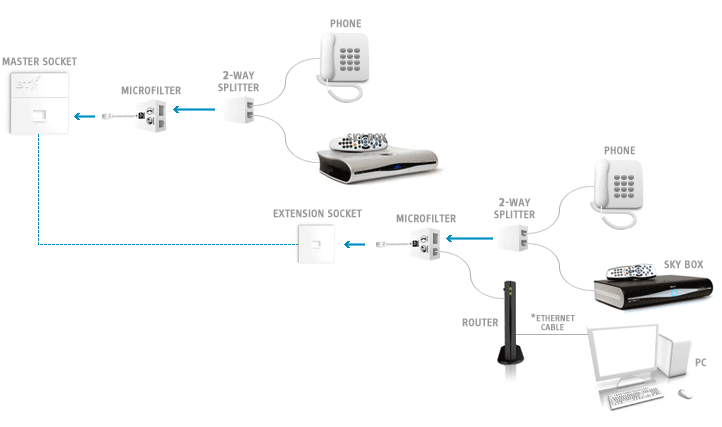

Connecting microfilters to an extension socket or lead
Although we recommend that you connect your broadband router to the master socket, we recognise that in some households it may not be possible. Here are some typical ways of connecting your router to an extension socket or extension lead.
Tips
- If your computer is in a different room to the extension socket, use a long ethernet cable to connect the router to your PC. Ethernet cables are much less susceptible to interference than telephone extension cables. They can be any length from 1 to 100 metres long. If using a longer ethernet cable is not an option for you, consider using the wireless capabilities of the router.
- Keep any extension leads as short as possible.
- Replace damaged extension leads or cabling between your master socket and extension sockets.
- Ensure that extension leads aren't running too close to power cables, or equipment that may have flasher units such as Christmas tree lights. Also, try to avoid running the extension cables too close to any high-wattage equipment such as emergen heaters, microwave ovens, cookers, air conditioning units, halogen lighting, etc.
- If you experience problems with your broadband connection, try connecting your Sky Wireless Router into your master socket for a short time. This can help identify if there is a problem with the internal wiring between any extension sockets or leads and the master socket. Poor extension socket wiring can cause problems with your broadband connection, such as slow speeds or an intermittent connection, and can even prevent the service from working. It can also cause noise on your phone line.
One set-top box and two phones

View using wired connection | View using wireless connection
Two set-top boxes and one phone

View using wired connection | View using wireless connection
Two set-top boxes and two phones

View using wired connection | View using wireless connection